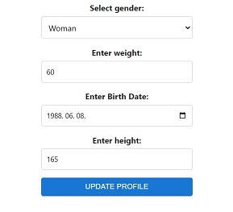
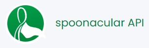
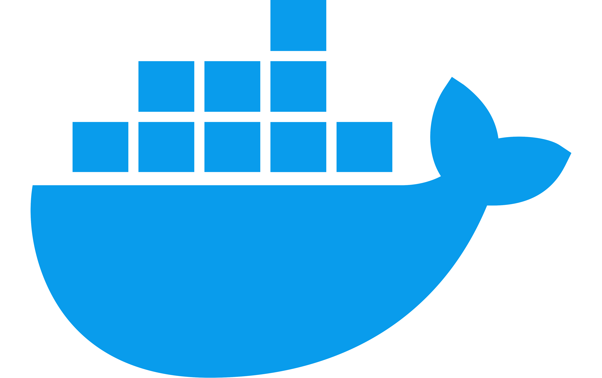

Fitness tracker
Nowadays, it's very important to follow our daily calorie intake and daily activities. The Fitness Tracker Application is a web-based platform that allows users to track their daily activities and food consumption. Users can log in, record their activities, and keep track of the calories burned and consumed.
Personal calorie and consumption tracker
When users first log in, the application asks for basic parameters such as gender, weight, birth date, and height. Based on these parameters, the application calculates the user's baseline calorie requirement. Profile settings can be changed at any time. This calorie requirement will appear in the Daily Calorie Balance section, as shown in the third picture below.
Food consumption and activity will also appear in the Daily Calorie Balance.
Development process
Github repository of this projectPlanning endpoints and create basic frontend design.
At the beginning of the development process, relational database management system (RDBMS) was not selected. Instead, the test data came from an in-memory database. However, this was sufficient to plan the necessary endpoints, along with their related DTOs and services. For frontend development, the React framework was chosen, and later, Material UI and Bootstrap were included to improve the appearance of the webpage.
Web development stack
PostgreSQL was chosen as the database, and Spring Boot was used as the framework to implement business logic. By using the Maven project and build management tool, more dependencies were added to the project. In the early stages, Project Lombok was already helpful, but later, JPA and Spring Security were also added as dependencies.
I used Hibernate as a JPA implementation, and with DAO repositories, I obtained the necessary query methods to retrieve the required data. There are five repositories: ActivityRepository, ActivityTypeRepository, CalorieRepository, FoodTypeRepository, and, when Spring Security was implemented, UserRepository was also added.
Data modell
Because I used PostgreSQL as the RDBMS, I used pgAdmin's ERD tool to visualize the data model.
Security
Nowadays, it's not negligible to have security features in your application to authenticate the user and provide the required authorization as well. I had to implement JWT (JSON Web Token) authentication to ensure secure and efficient user verification, token expiration management, and the ability to handle stateless sessions, enhancing both security and performance for our application. Additionally, on the frontend, I stored the JWT token in cookies to maintain secure and efficient user sessions.
3rd Party Calorie Database
It's needless to say that set up a database with initial data with hundreds or even thousands of records can be very tedious. Not only is importing the data challenging, but obtaining a valid database with accurate calorie and nutrition facts can also be difficult. Therefore, I attempted to find a solution by utilizing an existing database and integrating it into my project.
My first task was to find an available API with nutrition facts that could be a viable solution for me. My first attempt was Calorie Ninja, but querying its data was not reliable as the source was not always available. My second discovery was Spoonacular, which was a bit complicated compared to my needs, but I decided to proceed with it because it was very reliable.
Caching feature
Understanding the functionality of those APIs was just the first challenge. I sought to find a way to minimize frequent API fetching from the server, thereby reducing network traffic and ultimately improving performance. To implement caching functionality, I created two additional service classes. The first class (FoodTypeService )initiates the lookup from the database, and if there are no results, the second one (SpoonApiService) proceeds with the API search.
Dockerize my application
To create a portable application that can be easily run by everyone without worrying about dependencies, I decided to dockerize my application. Since my React application uses React Router and the entire client will be built into a production-like environment, the Spring Boot server serves both the API and the React app's static files. I needed to ensure that direct access to client-side routes serves the index.html, enabling React Router to handle the routing. To achieve this, I created a new controller called ViewController, which forwards all routes, such as /profile, to the root. This way, the Spring Boot server serves the index.html.
After my Dockerized application was working, I uploaded my Docker image to Docker Hub, making it shareable. By using the compose file and the env file, the initial database, username, password, and API key for Spoonacular can be set up.
Possible Further Development
- Connect another third-party API to fetch activity data.
- Implement analytics to display monthly and weekly charts.
- Send an email during user registration.